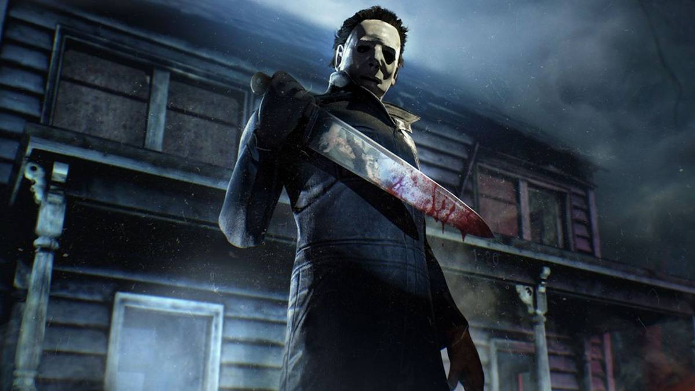

10 Scariest Horror Soundtracks Of All Time, Ranked
{kind=link}

Halloween is a time when horror scores ring out with menace across popular culture. The musical cues of slasher franchises like Friday the 13th transcend their source material, though it goes deeper than that. The best horror soundtracks embody the provocative themes of their respective films, abrasive and experimental, similarly to horror cinema itself—a misfit genre forever situated on the fringes.
Horror cinema is often produced independently, outside the purview of the major studios, which allows its composers the freedom to experiment outside established boundaries. Many from the past 50 years have been produced electronically, the low budgets encouraging a scrappy sense of innovation, and conceptually, many of these classics stand tall alongside modern experimental music.
The Texas Chainsaw Massacre, for instance, is a classic of independent low-budget cinema, and its score, composed by Wayne Bell and director Tobe Hooper, eschews traditional orchestral sounds, swapping them out for dissonant, industrial, and ambient sounds that evoke dread and disorientation, its minimalist, raw tones amplifying the horror on screen.
Meanwhile, The Exorcist leans on licensed music, in the form of Mike Bells Tubular Bells Pt 1, to memorable and evocative effect. Elsewhere, Italian horror maestro Dario Argento famously drafted Goblin to score his extravagant, blood-soaked classics like Suspiria, who delivered innovative scores that blended prog-rock complexity with eerie, atmospheric sound design.
Countless obscure horror nasties warrant a mention for their evocative scores, though certain soundtracks stand out as iconic, stubbornly rising to recognizable popularity from the cultural ghetto that horror cinema is often relegated to. This is the Screen Rant tribute to horror cinema’s most memorable soundtracks.
10 Hellraiser (1987)
Writer-director Clive Barker achieved something remarkable with Hellraiser, sneaking subversive themes into the mainstream with this tale of the mutilated, leather-clad cenobites who emerge from hell to extol the pleasures found in pain. Christopher Young goes the full orchestral route for an extravagant score that blends romantic melancholy with gothic terror.
There’s a certain mystery that is conveyed by the swelling strings of the main "Hellraiser" theme, perfectly matching the audience’s perverse fascination with the Cenobites, and the horrifying allure of the puzzlebox. Unlike many of the other cinematic renegades of this list, Hellraiser chooses a more conventional orchestral approach, infusing its score with an almost operatic grandeur.
9 Candyman (1992)
Another entry penned by Clive Barker, director Bernard Rose sought acclaimed composer Philip Glass to provide the score for this innovative cult classic. While there was allegedly creative tension on the project, with Glass complaining that he was tricked into scoring a “low budget Hollywood slasher flick,” he doesn’t allow Candyman nearly enough credit.
While the Hellraiser score was lush and orchestral, Glass chose a more minimalist, haunting approach for Candyman. He summons a certain operatic elegance, drawing on choral chants and repeated pipe organ motifs that help conjure the film’s tragic romanticism. Most memorably, its “Music Box” theme embodies the Candyman legend as a childlike myth passed through generations.
8 Rosemary’s Baby (1968)
Polish composer Krzysztof Komeda enjoyed a legendary career as a jazz musician, occasionally venturing into the world of film scores, and his jazz craftsmanship brings a celebrated point of difference to Roman Polanski’s chilling tale of the occult and maternal paranoia.
Mia Farrow provides the vocals on the iconic “Lullaby From Rosemary’s Baby,” a hummed, childlike melody that counters its soft exterior with a creepy dash of menace. Reflective of the fact that Polanski’s classic is a slow-burn affair, the soundtrack begins with lighter jazz stylings, before descending into darker, more ominous sounds as the film progresses and Rosemary’s paranoia grows.
7 Alien (1979)
The cosmic sci-fi horror of Alien resonates to this day, and the score by Jerry Goldsmith equally so, its musical motifs drawn upon repeatedly in the franchise’s subsequent sequels (and prequels). Despite reported behind-the-scenes tensions that saw much of the originally submitted score either edited or dropped, Ridley Scott nominates Goldsmith’s work as one of his favorite ever scores.
Think of Alien's "Main Title," which begins on a note of orchestral menace as the camera scans the cosmic emptiness of space, before giving way to the film’s iconic flute motif as the camera tracks the hallways of the Nostromo, building a sense of mystery for the terror that is soon to unfold.
6 The Shining (1980)
Stanley Kubrick is famously a prickly and obsessive creative force, and composers Wendy Carlos and Rachel Elkind delivered a ton of music for The Shining, including the film’s “Main Title,” a synth-driven rework of a composition from 19th-century composer Hector Berlioz, building an eerie sense of dread during the aerial shots of Jack’s drive to the Overlook Hotel.
For the most part, though, Kubrick worked with music editor Gordon Stainforth to find a selection of pre-existing works from avant-garde composers, which were meticulously synced to the actions and occurrences onscreen. It’s a terrifyingly effective technique that conveys the often lurking, invisible malice that dwells just beneath the surface at the Overlook Hotel.
5 The Thing (1982)
The Thing soundtrack is unique for how it represents a collaboration between two powerful creative forces, legendary composer Ennio Morricone, as well as writer-director-composer John Carpenter himself. Carpenter typically composed his own synth-driven soundtracks, though he wanted a different approach for The Thing, and flew to Rome to convince Morricone to take the job.
The seminal Once Upon a Time In The West composer pivoted from his usual orchestral approach, penning a score dominated by sparse electronic pulses and ominous drones (with occasional orchestral flourishes). Carpenter rounded it out with additional electronic cues in the editing stage, most memorable the ominous “du-dum” cue that echoes with menace throughout the film.
4 Tenebrae (1982)
Italian prog-rockers Goblin are legendary for the horror scores they’ve delivered for a swathe of their country’s horror directors, most notably Dario Argento on giallo classics like Suspiria and Deep Red. It’s a tough task to pick Goblin's best, but we’re going with Tenebrae, which saw the group (credited as Simonetti-Pignatelli-Morante) leaning into their electro-disco influences.
Argento dials up the energy on Tenebrae, to the point where it appears he’s playfully mocking giallo conventions, and Goblin delivers a fittingly lively soundtrack to match. Utilizing repetitive, pulsating synth motifs to sync stylishly with the film’s themes of urban paranoia, its title song "Tenebrae" proved timeless enough that it was sampled by Justice on their 2007 hit “Phantom.”
3 A Nightmare On Elm Street (1983)
This is the big one, in terms of evocative electronic soundtracks steeped in chilling, unnerving experimentalism. Wes Craven notoriously worked with the smallest of budgets on his supernatural slasher masterpiece, and composer Charles Bernstein was tasked with delivering the score all by himself with the shortest of timeframes. Sometimes limitations breed creativity.
Craven’s film is filled with surreal imagery that blurs the line between dreams and reality, and Bernstein’s work is effective because of how much it leans into this. The film’s main motif features an iconic melody that reappears in all subsequent films, though its synth-driven score is also woven into a cerebral electronic soundscape that matches Craven’s trance-like visuals.
Bernstein’s melodies are memorable, though they're also filled with jarring, discordant elements, while his soundscapes are packed with the kind of harsh, unnatural frequencies that only electronic music can produce. A seminal example of experimental electronic ingenuity in classic horror.
2 Halloween (1978)
Another low-budget horror smash that punched well above its weight in cinematic success, writer-director John Carpenter also produced the soundtrack in his inimitable synth-driven style. It’s also one of the most iconic and instantly recognizable soundtracks ever produced.
Carpenter’s main theme is a chilling horror anthem that rose to recognizable success beyond even the film itself, a tense piano melody that uses repetition to build tension without resolution. It’s layered over with menacing synth drones, perfectly embodying the evil, unrelenting presence of Michael Myers himself. Jarring synth stingers are regularly used to reflect the terror onscreen.
The iconic theme returned again and again in subsequent films, as critical to the franchise as the masked presence of “The Shape.” Carpenter was even invited back to revisit his classic soundtrack when the series was revived with the hit 2018 reboot (simply titled Halloween).
1 Psycho (1960)
Amongst any and all horror soundtracks, nothing comes close to matching the cultural ubiquity of the theme for Psycho. The film’s infamous “screaming strings” cue is delivered with slashing, high-pitched violin stabs that mimic the savage knife attack on the film’s would-be protagonist, Marion, while she showers, one of the most shocking scenes in cinematic history.
Hitchcock worked with legendary composer Bernard Herrmann for the film’s soundtrack, making the unconventional decision to work with a strings-only orchestra (eschewing brass, woodwinds, and even percussion). The score’s jagged, dissonant string motifs are among the most influential in film history, cinematic shorthand for mortal onscreen danger. It’s also a cultural touchstone for horror, helping secure the film’s enduring legacy.